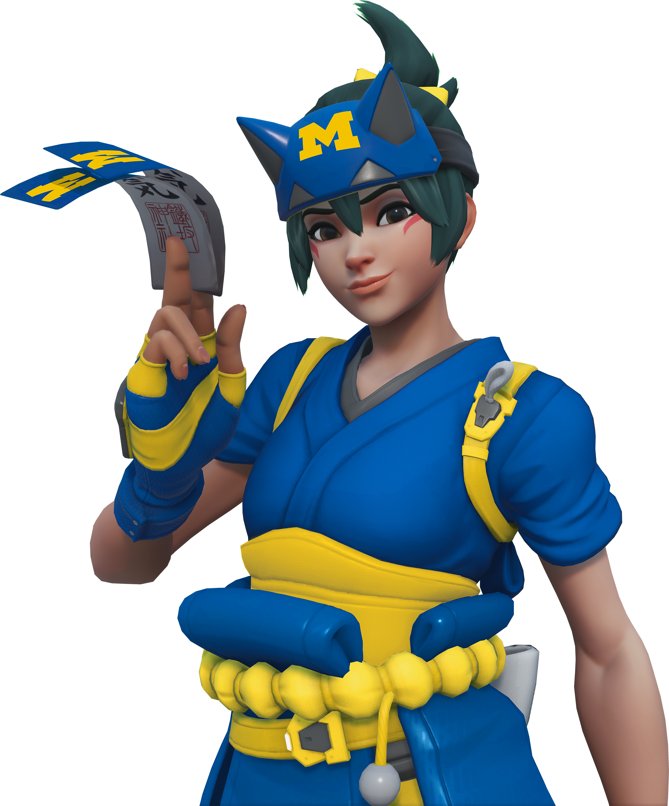
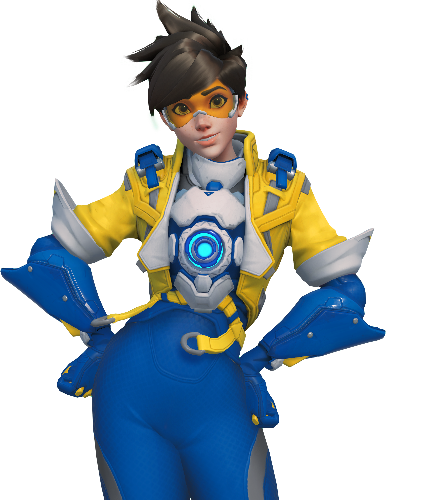
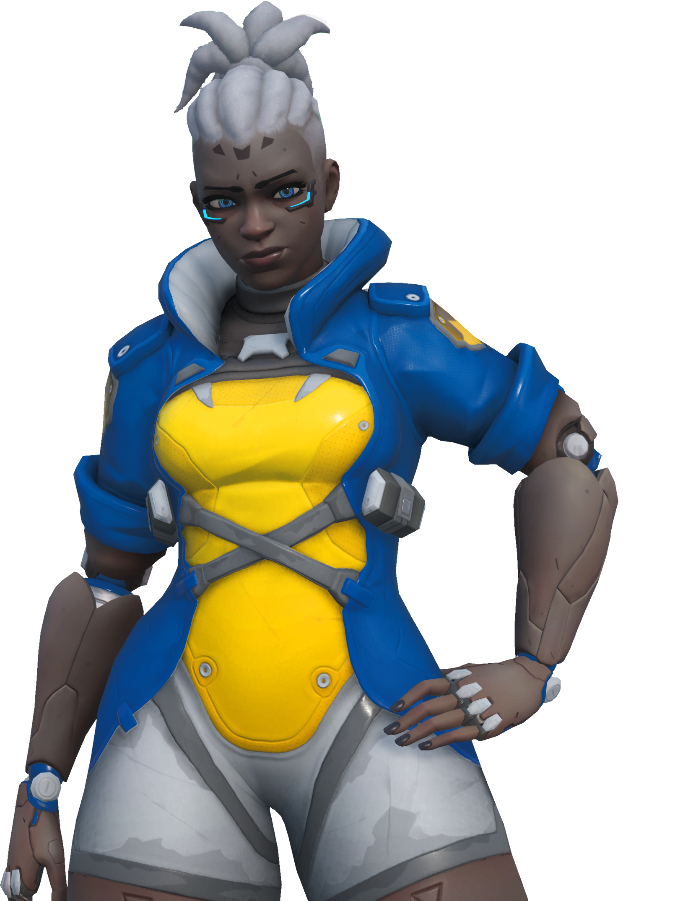
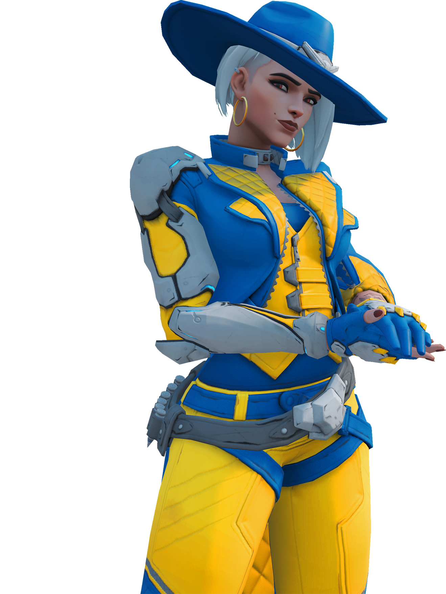
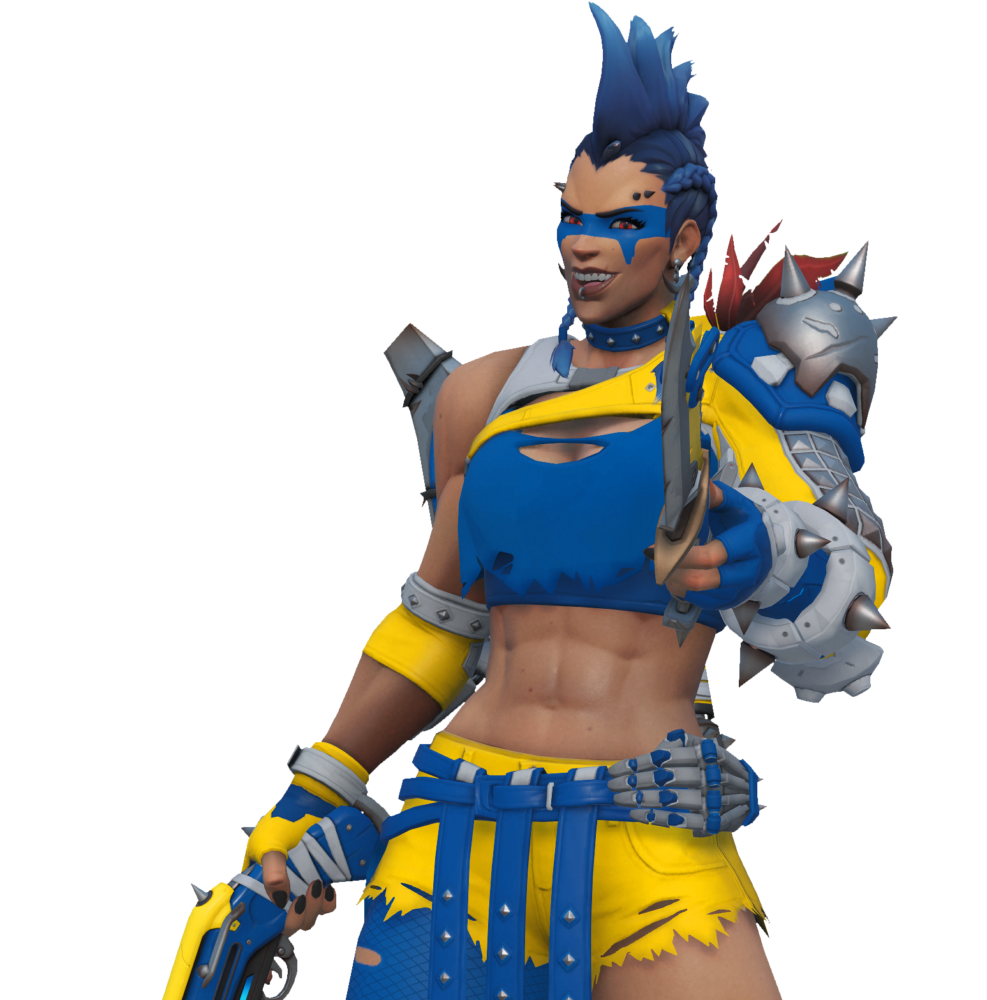
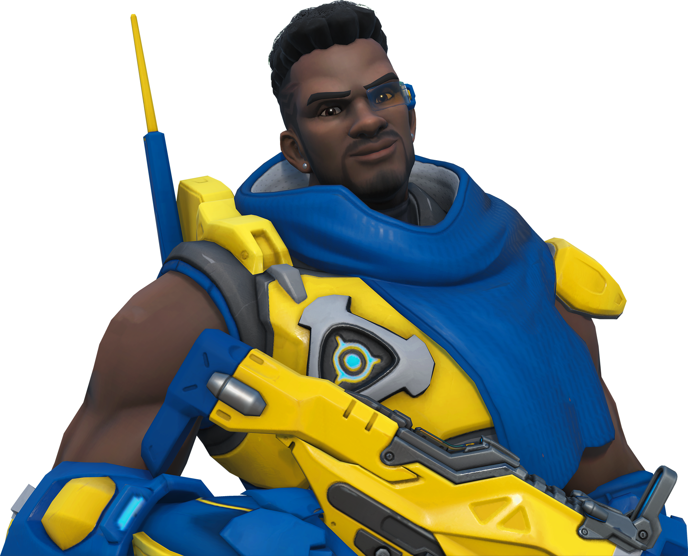
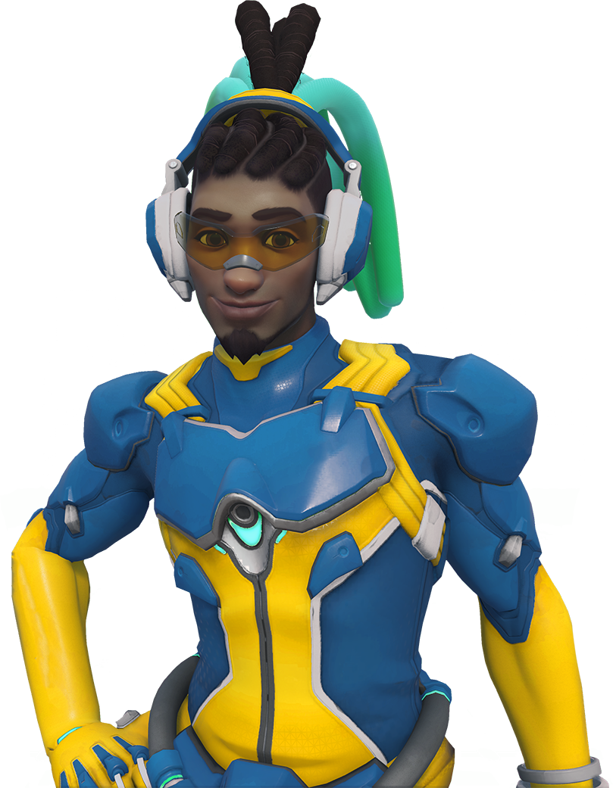
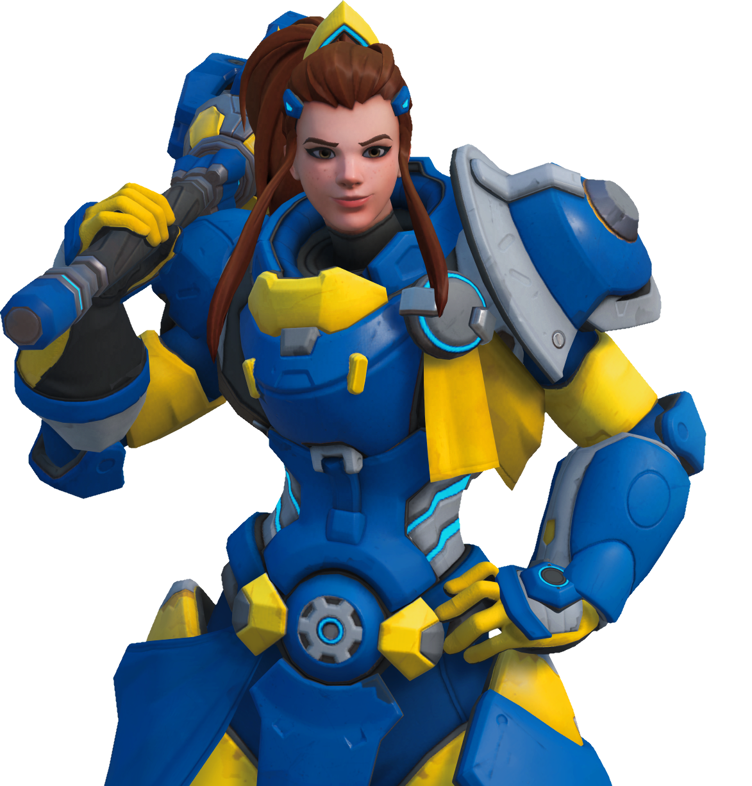

Meet the
Team.
Asking the University of Michigan Overwatch Team what song they listen to while playing.

Meet KennyBay.
3rd Year Junior, Kenny started out as a JV Tracer Specialist in 2023, and they quickly elevated to varsity mid-season and would become the starter Flex Damage for Varsity. KennyBay is known for being the best Tracer Player in the history of Varsity Overwatch. They continuously scale the top 100s in North America, and have continuously shown to be effective in dueling and contributing to teamplay on the team.

Meet Altraxia.
3rd Year Junior, Altraxia has been with the Overwatch Team since 2023, starting out as a JV Damage flex player their first year. They were promoted as a starter in 2024 and were later elevated to a Varsity player in 2025, playing the Starting Hitscan role for the Varsity Team.

Meet JungKang.
3rd Year Junior, JungKang started out as a DPS Starter for JV in 2023 as a Freshman. They would continue to be a contributing factor in JV's performance in NECC, eventually being granted the opportunity to play for Varsity in 2024 as a fill-in. As of 2025, they are a competing DPS player, playing the Flex DPS Role for the team.

Meet TobyWan.
4th Year Senior, Toby has been on the Overwatch team since 2022, first starting as a JV Tank is in their first year with the team. Their 2nd year, they were promoted to the varsity team and have since then been the Varsity's starting tank.

Meet Pupzy.
First year Freshman, Pupzy is a recent recruit in the Overwatch team, starting out this semester of fall 2025. They were able to become a key player, playing the support role.

Meet Claymore.
3rd Year Senior, Claymore joined the program in 2022, originally a DPS player for JV1 in their first year. They pivoted to playing Support in 2023, landing the spot as a Starting Support player in Varsity. In 2025, they are currently on international studies, placing themselves on the bench and acting as a Coach for both the Varsity and the JV Teams.

Meet Yimitra.
3rd Year Junior, Yimitra has been on the Michigan Overwatch team since 2023. Yimitra previously played Professional Overwatch from 2019-2022, using their experience and skill to be the starting main support role for Varsity. While also serving as a player-coach for the team since joining.

Interested?
3 Teams
For all Skill level and Commitment.
Coaching
For all participating members on teams.
Community
Tournament, PUGs, Watchparty, Hosted Weekly.
Contact nathantt. on Discord for more info